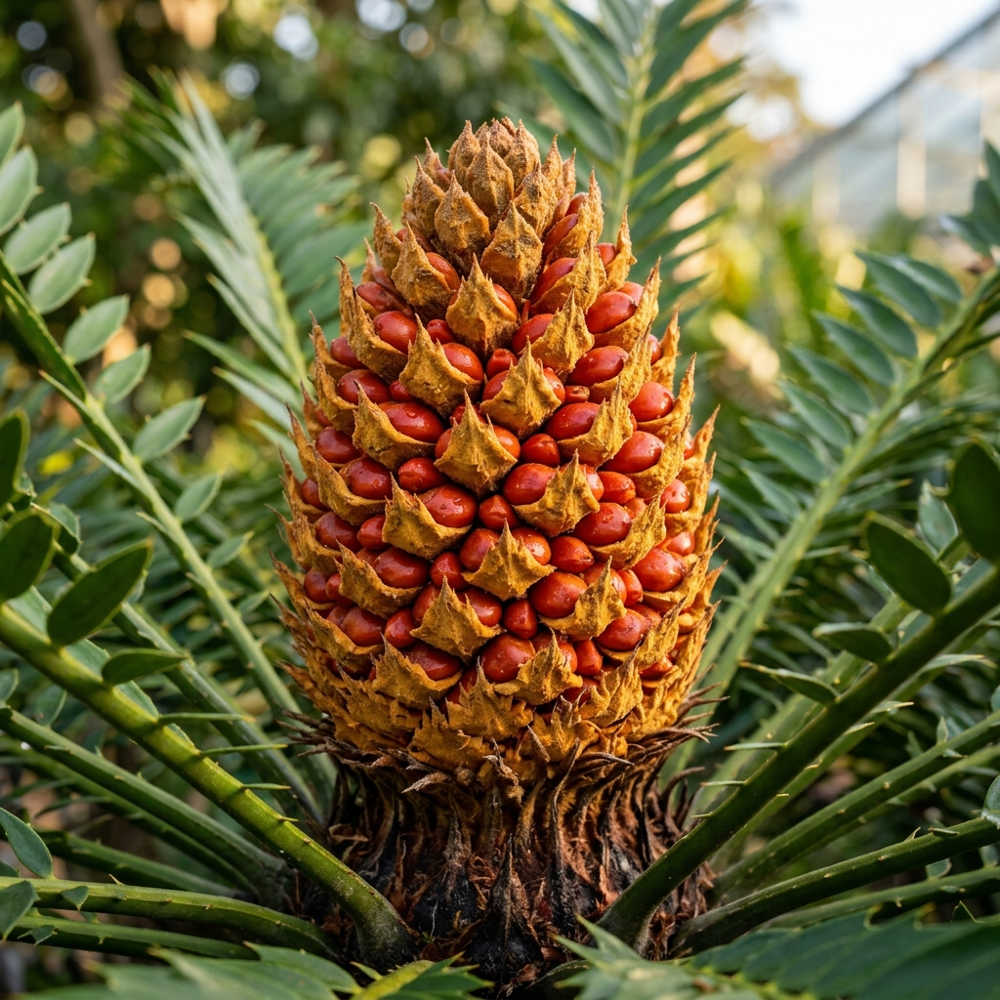

Eastern Cape Cycad
Encephalartos altensteinii
One of the most common and robust species. Features a tall trunk and bright green leaves, making it a spectacular focal point for large gardens.
Enquire
Eastern Cape Blue Cycad
Encephalartos horridus
A highly prized, striking silvery-blue cycad with distinctly spiny leaves. A magnificent collector's piece that requires excellent drainage.
EnquireKaroo Cycad
Encephalartos lehmannii
Known for its beautiful blue-grey leaves and incredible drought hardiness. Perfect for water-wise gardens and harsh climates.
Enquire
Poor Man's Cycad
Encephalartos villosus
A delightful shade-tolerant species with glossy dark green leaves. Fast-growing and perfect for planting under tree canopies.
Enquire
Modjadji Cycad
Encephalartos transvenosus
The tallest South African cycad, capable of reaching 13 meters. A sacred tree with magnificent broad, dark green leaves.
EnquireZululand Cycad
Encephalartos ferox
Instantly recognizable by its glossy, holly-like leaves and spectacular, bright red-orange cones. Thrives in coastal conditions.
EnquireNatal Cycad
Encephalartos natalensis
A majestic, fast-growing cycad with graceful arching leaves. Relatively easy to grow and an excellent landscaping choice.
Enquire
Three-spined Cycad
Encephalartos trispinosus
A highly ornamental species featuring compact blue-green foliage. Beautiful clumping habit that makes it perfect for rockeries.
Enquire